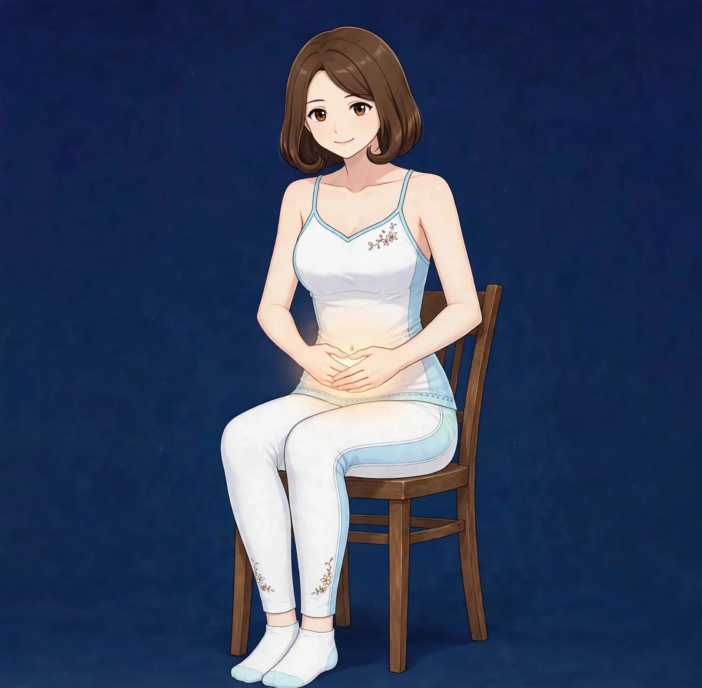

梅田で生理前後の不調感ケア｜周期の重だるさ・むくみに心身・女性特有

生理の前になると、体が重だるく、むくみやすく、気持ちも不安定になりやすい——周期に合わせた不調感は、多くの女性が抱えるお悩みです。痛みが強い場合や周期の異常がある場合は、婦人科への受診をおすすめします。
生理前後の不調感はどんな状態か
生理前後の不調感とは、周期に合わせて体が重だるい、むくみやすい、腰やお腹まわりが重い、気持ちが不安定になりやすい、といった波をまとめて表す言葉です。多くの女性が経験するものですが、表れ方には個人差が大きく、「いつものこと」と我慢し続けてしまう方も少なくありません。当店は医療機関ではなく、診断や治療は行いません。
この時期のケアで大切なのは、波があることを前提に過ごし方を工夫することです。無理をする時期と、いたわる時期を分けて考えるだけでも、日々の負担は変わります。痛みが強い場合や周期の異常がある場合は、婦人科への受診を優先してください。
こんなサインはありませんか？ — 生理前後の不調感のチェックリスト
- 生理前になると体が重だるい
- 周期に合わせてむくみやすい
- 気持ちが不安定になりやすい時期がある
- 腰やお腹まわりが重く感じる
- 生理前は靴や指輪がきつく感じやすい
- 腰の重さとお腹の張りを一緒に感じる
- 甘いものや塩分が多い食事が増えやすい時期がある
- 眠りが浅くなり、朝のだるさが増す時期がある
当てはまる項目が多いほど、負担がたまりやすい生活が続いている可能性があります。次の「要因」と見比べて、どこに負担が集まっているか確かめてみてください。
生理前後の不調感につながりやすい要因
- 周期に伴う水分の変化：生理前は体が水分をため込みやすい時期とされ、むくみ感や重だるさとして表れやすくなります。体重の小さな増減も、この時期は水分の影響が大きいものです。
- 血の巡りの滞りやすさ：東洋医学では、女性の周期と血の巡りは深くつながっていると考えます。巡りが滞りやすい時期には、腰やお腹まわり、脚の重さとして感じやすくなります。
- 冷えの影響：体が冷えていると、この時期の重さは増しやすくなります。お腹や腰、足首を冷やさない工夫は、時期を通しての土台になります。
- 食事の波：塩分の多い食事はむくみ感を、甘いものの摂りすぎはその後のだるさを強めることがあります。時期に合わせた食事の意識が支えになります。
- 睡眠と気持ちの波：眠りが浅くなりやすい時期でもあり、睡眠の波が気持ちの安定にも影響します。就寝前の過ごし方を整えることが、この時期は特に大切です。
- 予定の詰め込み：波がある時期に予定を詰め込むと、負担が一気に大きくなります。周期を把握して、いたわる時期の予定を軽くする工夫も有効です。
図1｜生理前後に重さを感じやすい部位

東洋医学から見た考え方
東洋医学では、女性の周期と血の巡りは深くつながっていると考えます。巡りが滞りやすい時期には、お腹まわりや腰、脚の巡りを意識したケアで、体を温めながらほぐす視点を大切にします。
見立てでは、水の巡りに関わる脾経、血の巡りに関わる肝経、体の中心を通る任脈、女性の巡りと関連づけられる衝脈などが関連づけられます。施術では、お腹まわりや腰、脚の巡りを意識し、体を温めながらほぐす視点を大切にします。
代表的なツボ
この時期のケアでよく挙げられるツボを紹介します。お腹のツボは手のひらで温める穏やかなケアが向いています。生理中の強い圧は避け、体調に合わせて行ってください。
図2｜周期のケアで挙げられるツボの位置
おすすめ施術
オイルマッサージ
腰まわり、脚、お腹まわり（ご希望を確認してから）を中心に、温かさを意識しながらほぐします。体調に合わせて圧や部位を調整しますので、予約時に時期や状態をお伝えください。
進め方は、腰まわり、脚、お腹まわり（ご希望を確認してから）を中心に、温かさを意識しながらほぐしていく流れです。時期によって体の感じ方は大きく変わるため、当日の状態をうかがい、圧や部位を細かく調整します。
ご予約の際は、差し支えなければ時期や状態を一言お伝えください。組み立てがスムーズになります。生理中のご利用も可能ですが、体調がつらい日は無理をせず、日程の変更もLINEでご相談いただけます。
当店の施術は、気になる部分だけをなでるのではなく、つながりのある部位まで含めて深い圧でほぐし、巡りを促しながら整えていくのが持ち味です。施術のあとに「体が軽い」「すっきりした」と感じていただける状態を目指して、90分を組み立てます。
自宅でできるセルフケア
この時期のセルフケアは「温める・無理をしない・波を知る」が基本です。体調がつらい日は、ケアより休息を優先してください。
- 1．お腹と腰を温める関元のあたりに手のひらや蒸しタオルを当てて温めます。腹巻きや羽織もので、お腹と腰を冷やさない工夫も日常の土台になります。
- 2．三陰交をゆっくり押す入浴後、内くるぶしの上の三陰交を親指で5秒×数回押します。冷えも一緒に感じる方は、足首を温めるケアと組み合わせてください。
- 3．塩分と食事のバランスむくみ感が強い時期は、塩分の多い食事を控えめにし、温かい食事のリズムを意識します。我慢ではなく、時期に合わせた調整として取り入れてみてください。
- 4．予定を軽くする工夫周期を手帳で把握し、重くなりやすい時期は予定を詰め込まない工夫を。早めの就寝も、この時期の大切なケアです。
図3｜セルフケア「お腹を温める」手順
場面別の注意
生理前の重くなりやすい時期
予定を詰め込まず、温めるケアと早めの就寝を優先してください。むくみ感が強い日は、脚を高くして休む時間も助けになります。
生理中の過ごし方
体調がつらい日は施術も無理に受けず、休息を優先してください。ご利用の場合は圧を控えめに調整しますので、当日の状態をお伝えください。
生理後の回復期
重さが抜けてくる時期は、軽い運動や散歩を再開しやすいタイミングです。次の周期に向けて、睡眠と食事のリズムを整える期間として使ってみてください。
受診の目安
次のような場合は、サロンでのケアの前に医療機関への受診をおすすめします。
- 痛みが強く、日常生活や仕事に支障が出ている
- 周期の異常（大きく乱れる、量の異常など）が続いている
- 貧血のようなふらつきや、強いだるさを伴っている
- 気分の落ち込みが強く、長く続いている
- 市販薬を使っても痛みが収まらない日が増えている
当店は医療機関ではなく、診断は行いません。迷うときは、まずかかりつけの医療機関にご相談ください。
よくある質問
Q．生理中でも施術を受けられますか？
はい、受けられます。体調に合わせて圧や部位を調整します。体調がつらい場合は、無理をせず日程変更も可能ですので、LINEでご相談ください。
Q．お腹まわりも触ってもらえますか？
ご希望を確認してから行います。温めを中心とした穏やかなケアですので、抵抗がある場合は遠慮なくお伝えください。お断りいただいても施術全体の組み立ては可能です。
Q．どのタイミングで通うのがよいですか？
重くなりやすい生理前に使う方も、生理後の回復期に使う方もいます。ご自身の波のパターンに合わせてご利用ください。
Q．痛みが強い場合はどうすればよいですか？
痛みが強い場合や周期の異常がある場合は、まず婦人科への受診をおすすめします。当店は診断や治療を行う場所ではありません。
関連するお悩みページ
関連する経絡ページ
ご予約
ステラポラリス（大阪・梅田／女性専用）｜オイルマッサージ 90分 10,000円｜月〜土 17:00〜22:00・完全予約制・中崎町駅徒歩5分
ご予約はLINE公式アカウントで受け付けています。希望の日時と、気になる場所を送ってください。
さらに学びたい方へ：現場で使われる専門書（PR）
このページのテーマに合わせて選んだ本と、当店の施術でも参考にしている専門書です。


※本ブロックのリンクはAmazonアソシエイト・プログラムおよび楽天アフィリエイトによる広告リンクです。使用感の保証をするものではありません。